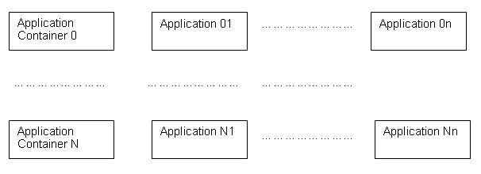
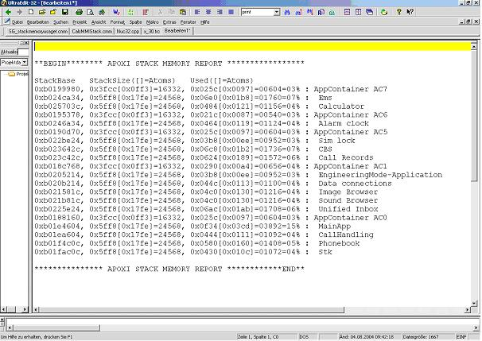

This document describes the usage of the application memory meter of the APOXI framework on SGOLD. The application memory meter gives a snapshot of the current stack memory used by all Apoxi applications and by all Apoxi application containers. The document also contains some hints concerning memory optimization.
Usage of operating system Nucleus32 on SGOLD leads to following stack memory scenario:

There are two ways to obtain the current stack memory usage: either via Trace (DbgOut) or via Lauterbach Debugger.
To read memory usage via trace connect a trace terminal (for example tp-190.exe) to UART1 on the SGlobe(light) board. After booting Apoxi the SW goes to idle screen. By pressing the up-key (up-arrow) in the idle screen the current application stack memory usage is written to the current trace file. Attention: DbgOut has to be activated in the SW.
To read memory usage via Lauterbach debugger attach the Lauterbach debugger to the ARM controller on the SGold and load corresponding debug information (axf-file). After booting Apoxi, break the program flow in the debugger and do cmm-file "\lnz_mmi\Mmi\etc\t32\Edge\SG_stackmemoryusage.cmm". The current application stack memory usage is written to the Message Area of Lauterbach (View-->Message Area).
The output is identical for both trace output and Lauterbach output. The output looks as follows:

The output contains the stack base ("StackBase"), the stack size ("StackSize") and a snapshot of the current memory usage ("Used") for every application and for every application container. As the stack is written from higher to lower addresses (stack pointer SP is decremented when writing to the stack), the stack actually starts at StackBase + StackSize and grows down towards StackBase. On SGold one StackAtom is 4 bytes.
The application stack memory meter can be used to optimize RAM memory usage.
Every application's stack memory peak (overall maximum stack memory used by an application) can be obtained by stressing the application and afterwards reading out the application's stack memory usage using the application stack memory meter as described in the previous section.
After obtaining the application's stack memory peak the size of the application's stack memory region can be adapted either directly in the application (see for example the setting of the stack size for the SoundBrowserApplication to 3600 bytes):
SoundBrowserApp::SoundBrowserApp() :
Base(L"Sound Browser", 3600)
{
m_media_needs_refresh = FALSE;
} // SoundBrowserApp
or in file "\lnz_projects\Project\Config\StartUpConfig.cpp" (see for example the setting of the stack size for the SoundBrowserApplication to 6142*4 bytes):
StartUp::Table* StartUpConfig::GetStartupTable(const StartUp::Data & startup_data)
{
static StartUp::Table normal_on_table[] = {
…
#if defined(APPLICATION_SNDBROWSER)
{TRUE, SoundBrowserApp::GetInstance(), 1, 6142*4},
#endif
…
}
The setting in StartUpConfig overwrites the setting done within the application.
After the stack memory has been optimized for every single application as described in the previous section (and after optimizing stack memory usage for every application container), the overall RAM usage can be optimized in file "\lnz_projects\Project\Config\MemoryConfig.cpp".
For further information please see documents "MemoryManagement.pdf" (and "MemoryManagement.doc") in subfolders of "\lnz_doc\NonDisclosables".